정보통신기사(구) (2006-09-10 기출문제)
1과목: 디지털 전자회로
1. 그림과 같은 회로의 입력으로 스텝 전압을 인가할 때 출력에는 어떤 형태의 전압이 나타나는가? (단, A는 반전 이상적인 연산증폭기이다.)
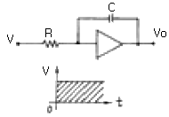
- 펄스 전압
- 스텝 전압
- 크기가 직선적으로 변하는 전압
- 크기가 지수함수적으로 변하는 전압
(정답률: 28%)

2. 100[MHz] 발진기를 사용해서 25[MHz]를 만들려면 몇 개의 T형 플립플롭이 필요한가?
- 1개
- 2개
- 3개
- 4개
(정답률: 30%)
3. 부궤환 증폭회로의 장점이 아닌 것은?
- 이득(Gain)의 안정
- 주파수 대역폭의 개선
- 비직선 일그러짐의 감소
- 입력신호가 필요 없음
(정답률: 40%)
4. 그림과 같은 검파회로로 AM 반송파의 진폭이 3[V], 변조율 60[%]의 전압이 가해졌을 때 검파효율 η=0.8일 경우 RL양단에 나타나는 출력 전압의 교류분 실효치는 약 얼마인가?
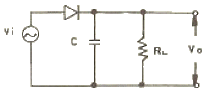
- 0.7[V]
- 1.02[V]
- 1.25[V]
- 1.44[V
(정답률: 알수없음)
5. 그림과 같은 발진회로의 발진 주파수는?
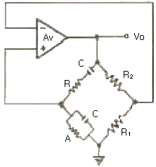
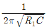
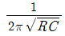
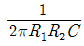
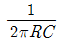
(정답률: 알수없음)
6. 차동증폭기의 동상제거비(common mode rejection ratio)의 설명 중 틀린 것은?
- 동상입력 이득에 대한 이상입력 이득의 비를 말한다.
- 이 값이 클수록 차동 증폭기의 성능이 좋다.
- 동상신호를 제거하는 척도이다.
- 회로의 안정도면에서는 이 값이 작을 수록 유리하다.
(정답률: 알수없음)
7. 다음 그림의 회로에서 실리콘 다이오드 양단간의 전압차이 VD는?
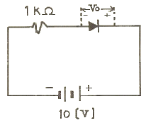
- 0[V]
- 0.7[V]
- 1.0[V]
- 10[V]
(정답률: 알수없음)
8. 다음 논리소자 중 속도가 가장 빠른 것은?
- TTL
- ECL
- MOS
- CMOS
(정답률: 알수없음)
9. TTL과 비교하여 MOS 논리회로의 특징이 아닌 것은?
- 높은 입력 임피던스이다.
- 소비전력이 작다.
- 잡음여유도가 크다.
- TTL과의 혼용이 매우 용이하다.
(정답률: 42%)
10. 그림의 TTL gate가 수행할 수 있는 논리기능은?
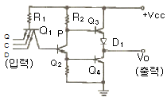
- NOT
- NOR
- AND
- NAND
(정답률: 알수없음)
11. 주파수변조(FM)에서 S/N 비를 높이기 위한 방법으로 적당치 않은 것은?
- 변조지수 β를 크게 한다.
- 신호파의 진폭을 크게 한다.
- 최대 주파수 편이를 크게 한다.
- pre-emphasis를 사용한다.
(정답률: 알수없음)
12. 다음 카운터의 명칭은?
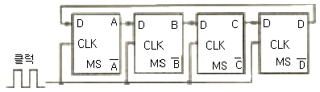
- 링 카운터
- 4진 카운터
- 6진 카운터
- 8진 카운터
(정답률: 29%)
13. 다음 중 FET와 TR의 차이점이 틀린 것은?
- FET는 TR보다 입력저항이 크다.
- TR은 양극성 소자이고, FET는 단극성 소자이다.
- TR는 FET보다 이득대역폭적(gain-bandwidth product)이 작다.
- FET는 TR보다 잡음이 적다.
(정답률: 알수없음)
14. 다음 중 연산 증폭기(Op-Amp)의 응용 회로가 아닌 것은?
- 적분기
- 디지털 반가산 증폭기
- 미분기
- 아날로그 가산 증폭기
(정답률: 0%)
15. 2진수 11010을 그레이 코드로 변환하면?
- 11011
- 00101
- 10110
- 10111
(정답률: 알수없음)
16. 수정발진회로에서 수정진동자가 안정하게 발진할 수 있는 조건은? (단, ωs는 수정편 자체의 직렬공진 주파수, ωr은 수정진동자의 병렬용량을 고려한 주파수다.)
- ωs ＜ ω ＜ ωr
- ωr ＜ ω ＜ ωs
- ωr = ωs
- ωs ＞ ωr
(정답률: 알수없음)
17. 그림과 같은 다아링톤(Darlington) 접속 회로에서 전류이득 Io/Ib는 얼마인가? (단, Q1과 Q2의 Hfe는 50 이다.)
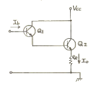
- 2301
- 2401
- 2501
- 2601
(정답률: 알수없음)
18. 다음 회로에서 Vi=0일 때 출력 Vo는? (단, 다이오드는 이상적이다.)
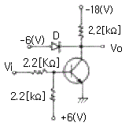
- 0[V]
- -6[V]
- -9[V]
- -18[V]
(정답률: 29%)
19. 그림과 같은 논리회로의 출력은?
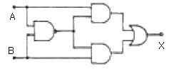
- X = A + B
- X = A ⊕ B
- X = A ㆍ B
- X =
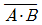
(정답률: 알수없음)
20. 다음 연산증폭 회로에서 출력 Vo는?
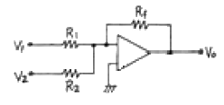
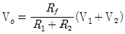
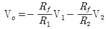
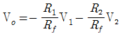
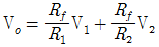
(정답률: 알수없음)
2과목: 정보통신 시스템
21. 패킷 교환망에서 PAD 기능을 설명한 것 중 맞는 것은?
- X.25 인터페이스 기능을 갖지 않는 단말기를 패킷망에 수용하기 위한 기능
- 우선순위가 높은 lnterrupt 패킷을 전송하기 위한 DTE의 한 기능
- 두 개의 DCE 간에 단절된 내부가상회로를 다시 성립시키는 기능
- 공중전화망에서 단말기의 인터페이스 기능
(정답률: 알수없음)
22. 광섬유 통신에서 대역폭은 다음 중 어느 것과 가장 밀접한 관계를 갖고 있는가?
- 중계기의 거리
- 통화회선 용량
- 도청의 정도
- 광섬유의 수명
(정답률: 알수없음)
23. 통신 프로토콜을 전송할 데이터 프레임의 구성에 따라 비트방식, 바이트방식, 문자방식으로 나눌 때, 다음 중 비트방식에 해당하지 않는 것은?
- BSC
- HDLC
- LAP-B
- SDLC
(정답률: 37%)
24. 광전송시스템의 장점과 관계가 없는 것은?
- 넓은 대역폭을 갖는다.
- 손실(loss)이 적다.
- 전송로를 통한 전원공급이 쉽다.
- 보안이 우수하고, 신뢰성이 높다.
(정답률: 60%)
25. 광케이블 통신의 구성에 있어서 전광변환기에 사용되는 반도체 레이저 또한 발광 다이오드는 어디에 설치되어 있는가?
- 수신측
- 수신측과 송신측
- 송신측
- 광케이블 중간
(정답률: 알수없음)
26. OSI 7계층 중 망(NETWORK) 계층의 기능이 아닌 것은?
- 암호화, 코드변환
- 폭주제어(congestion control)
- 경로설정(routing)
- 네트워크 연결
(정답률: 알수없음)
27. 전송 네트워크에서 전송되는 데이터 신호가 어떤 원인으로 위상이 순간적으로 흔들리는 현상은?
- 임펄스성 잡음
- 위상지터
- 위상도약
- 위상지연
(정답률: 알수없음)
28. 데이터그램 패킷교환(datagram packet switching)의 특징이 아닌 것은?
- 패킷전송
- 각 패킷마다 경로가 설정됨
- 각 패킷마다 오버헤드 비트가 있음
- 전용 전송로를 가짐
(정답률: 43%)
29. 평균고장간격이 97시간이고, 평균수리시간이 3시간일 때의 가동률[%]은?
- 97
- 3
- 103
- 197
(정답률: 알수없음)
30. VAN의 통신처리기능으로서 회선의 접속, 각종 제어 절차등의 데이터를 통신할 때 통신절차를 변환하는 것은?
- 미디어 변환
- 부호 변환
- 프로토콜 변환
- 속도 변환
(정답률: 알수없음)
31. 다음 중 HDLC의 프레임 구조가 순서대로 옳게 나열된 것은?
- FLAG, ADDRESS, CONTROL, DATA, FCS, FLAG
- FLAG, CONTROL, ADDRESS, DATA, FCS, FLAG
- FLAG, CONTROL, DATA, ADDRESS, FLAG, FCS
- FLAG, DATA, CONTROL, ADDRESS, FCS, FLAG
(정답률: 알수없음)
32. 파장분할 다중전송 시스템(WDM)에서 가입자계 및 장거리 초대용량 전송을 하기 위한 구비 조건을 열거한 설명으로 틀린 것은?
- 가능한 한 좁은 대역에서 광섬유의 손실값이 낮을 것
- 각 파장 대역에서 발광하며 또 발광파장을 제어할 수 있는 발광원을 갖출것
- 각 파장 대역에서 충분히 감도가 좋은 수광소자를 갖출것
- 특성이 좋은 광합파기 및 광분파기를 갖출 것
(정답률: 70%)
33. 전화, 데이터, 비디오텍스, 텔리텍스, 팩시밀리와 같이 단일 서비스를 제공하는 N-ISDN에서 가입자에게 공급하는 디지털 채널의 기본 인터페이스 구조는?
- 2B+D
- 23B+D
- 30B+D
- 64B+D
(정답률: 알수없음)
34. 다음 중 기종이 다른 단말장치간에 전송이 가장 효율적으로 가능하도록 제공해 주는 통신방식은?
- 전용회선방식
- 회선교환방식
- 메시지교환방식
- 패킷교환방식
(정답률: 알수없음)
35. 광섬유를 기본으로 하는 통신망과 관계 없는 것은?
- FDDI
- ATM
- SONET
- 10 BASE-T ETHERNET
(정답률: 알수없음)
36. ITU-T에서 권고하고 있는 No. 7 신호방식에 대한 설명 중 적절하지 못한 것은?
- 여러가지 선로 및 망관리정보를 공통의 한 채널로 전송한다.
- 공통 신호채널에는 음성을 비롯한 데이터 신호도 함께 전송한다.
- 디지털 통신망에서 음성 및 비음성 교환기간 신호기능을 수행한다.
- 신규서비스가 개발될 때마다 새로운 신호 절차를 쉽게 부가할 수 있다.
(정답률: 알수없음)
37. 다음 중 공중패킷망 간의 상호접속용 프로토콜은?
- X.75
- X.30
- X.25
- X.21
(정답률: 30%)
38. 다음 중 데이터를 전송하는 데 있어서 에러의 주된 원인이 되는 잡음은?
- 열 잡음
- 충격성 잡음
- 전자파 잡음
- 험 잡음
(정답률: 34%)
39. 어떤 통신회선의 신호레벨을 측정하였더니 -10[dBm]이었고 잡음레벨은 -40[dBm]이었다. 이 회선의 S/N비는?
- 0.25[dB]
- 40[dB]
- -6[dB]
- 30[dB]
(정답률: 알수없음)
40. LAN에서 사용하는 다중액세스방식 중 토큰패싱방식과 비교한 CSMA/CD방식의 특징으로 옳은 것은?
- 각 노드의 액세스 시간이 보장된다.
- 가변길이 메시지송신이 가능하다.
- 토큰패싱 방식에 비해 매우 복잡하다
- 한 노드에서 송출된 메시지는 모든 노드의 콘트롤러에서 수신 가능하다.
(정답률: 34%)
3과목: 정보통신 기기
41. 정보 전송 대역에서 주파수에 대한 감쇄와 전파시간의 차이를 보상해 주는 기능을 갖는 장치는?
- 등화기(Equalizer)
- 스크램블러(Scrambler)
- 모뎀(Modem)
- 여파기(Filter)
(정답률: 40%)
42. 라우터(Router)의 설명으로 가장 옳은 것은?
- 근거리통신망 내에서 세그먼트들을 서로 연결하는데 사용되며, 또한 유무선 광역통신망 전송을 증폭하고 연장하는 데에도 사용된다.
- 어떤 통신망 내에서의 트래픽 흐름의 경로를 결정하여 메시지 전달을 신속히 처리하기 위한 장치다.
- 디지털 신호를 아날로그 전송 회선의 전송에 적합하도록 변조하여 통신 회선을 통해 전송하며 수신측에서는 이의 역과정을 통해서 원래의 신호로 복원하는 것이다.
- 통신망에 과다하게 연결된 컴퓨터로 인한 병목현상을 줄이고자 할 때, 서로 다른 물리적 매체로 구성된 통신망을 연결할 때 사용한다.
(정답률: 알수없음)
43. 탄소형 송화기를 구성하는 장치가 아닌 것은?
- 진동판
- 탄소입자
- 가동 및 고정전극
- 영구자석
(정답률: 알수없음)
44. 다음 전송 방법 중 자연현상의 영향을 가장 많이 받는 것은?
- 위성 통신(satellite)
- 전화선(twist pair cable)
- 동축 케이블(coaxial cable)
- 광 케이블(optical fiber cable)
(정답률: 50%)
45. 다음 그림은 팩시밀리 수신의 기본 동작원리도이다. "A"의 장치는?
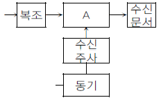
- 전광변환
- 광전변환
- 레벨변환
- 주파수변환
(정답률: 알수없음)
46. 공중통신회선을 이용하여 정보의 처리, 축적, 가공 등의 부가가치를 부여한 음성 또는 데이터 정보를 제공하는 정보통신 서비스는?
- ISDN
- CATV
- VAN
- LAN
(정답률: 알수없음)
47. 무선전화기의 도청을 방지하기 위하여 사용하는 것은?
- 증폭기
- LAN
- PLL
- 비화기
(정답률: 알수없음)
48. 다음 중 간접 FM 변조방식은?
- 위상변조기를 이용한 회로
- 다이오드 리액턴스를 이용한 회로
- VCO(전압제어발전기)를 이용한 회로
- 리액턴스 FET를 아용한 회로
(정답률: 알수없음)
49. 고속 광대역 통신에 적합한 ATM교환기의 비동기식 전송모드(ATM)에 대한 설명 중 맞는 것은?
- 물리적인 회선연결로 전송속도가 일정하다.
- 정보의 지연이 일정하다.
- 정보전달 시 손실이 없다.
- 정보의 형태는 VBR(Variable Bit Rate)에 적합하다.
(정답률: 28%)
50. 멀티포트 모뎀에 대한 설명 중 가장 적합한 것은?
- 고속 동기식 모뎀과 시분할 다중화기기를 하나로 합친 형태
- 멀티 포인트와 시스템에서 발생하는 전송지연을 최소화하기 위해 고속 폴링(Polling)을 할 수 있도록 설계
- 데이터 전송에 대해 광대역 주파수를 분할하지 않고 그대로 군(Group)대역으로 고속전송을 수행
- 비교적 제한된 거리 환경에서 사용되는저렴한 모뎀으로 특수목적용으로 이용
(정답률: 알수없음)
51. 멀티 미디어의 특징에 관한 설명과 거리가 먼 것은?
- 기존 미디어가 발전 융합된 것이 많다.
- 대화형 정보 전달로 상호 작용성이 있다.
- 통신 기술의 발전으로 가능하게 되었다.
- 단방향 통신기능 전용으로 정보접근이 용이하다.
(정답률: 40%)
52. 수신기의 성능을 평가하는 요소와 거리가 먼 것은?
- 변조지수
- 감도
- 선택도
- 충실도
(정답률: 알수없음)
53. 통계적 다중화기의 장점이 아닌 것은?
- 대역폭의 낭비가 없다.
- 전송 효율을 높일 수 있다.
- 전송할 데이터가 없는 단말에 부채널을 할당한다.
- 마이크로 프로세서 등을 이용하여 시간폭을 할당한다.
(정답률: 알수없음)
54. 위성통신 중계기의 TWTA RF 출력전력이 80W, 동작에 필요한 DC 입력전력이 100W라고 할 때 효율은 몇 %인가?
- 120
- 110
- 100
- 80
(정답률: 55%)
55. CCTV 기본구성 중 촬영계에 속하지 않는 것은?
- TV 모니터
- TV 카메라
- 광학렌즈
- 지지보호대
(정답률: 알수없음)
56. 통신제어장치의 기능 중 정보전송의 기능 아닌 것은?
- 송신권 제어
- 오류 제어
- 우선권 제어
- 흐름 제어
(정답률: 알수없음)
57. 팩시밀리 전송에서 부호와 하는 방법 중 연속된 2차원 정보에 대해 부호화하는 주사선과 부호화 이전 주사선과의 상관 관계를 부호화 하는 방법은?
- Wyle 부호
- MR(Modified Read) 부호
- MH(Modified Huffman) 부호
- BCH 부호
(정답률: 알수없음)
58. TV 전파 사이의 빈틈인 수직주사선 소거시간을 이용하여 통신하는 것은?
- Telex
- Teletext
- Videotex
- 고품위 TV
(정답률: 알수없음)
59. 데이터통신용 단말장치의 구성부분이 아닌 것은?
- 입력장치부
- 회선접속부
- 회선제어부
- 변ㆍ복조부
(정답률: 알수없음)
60. 근거리통신망(LAN)의 구조라 할 수 없는 것은?
- 스타형
- 곡선형
- 버스형
- 링형
(정답률: 알수없음)
4과목: 정보전송 공학
61. 데이터 통신망의 데드락(deadlock) 회피를 위해 필요한 제어는?
- 흐름제어
- 경로제어
- 오류제어
- 순서제어
(정답률: 알수없음)
62. 수신한 마이크로파를 검파하여 기저대역신호로 만든 다음 증폭한 후 다시 마이크로파로 변조하여 송신하는 중계방식은?
- 헤테로다인 중계방식
- 4 주파수 중계방식
- 검파 중계방식
- 직접 중계방식
(정답률: 50%)
63. 비트 지향형 동기식 전송 방식에서 동기를 위해 데이터 묶음의 앞뒤에 플래그 문자를 사용하는데 이와 관련된 내용 중 잘못된 것은?
- 보낼 데이터가 없어도 항상 플래그를 보내 동기를 유지한다.
- 플래그 문자로는 보통 “01111110”을 주로 사용한다.
- 플래그와 같은 데이터 전송시 비트 스터핑(bit stuffing)기법을 쓴다.
- 플래그 문자와 플래그 문자 사이에 약간의 휴지 간격이 필요하다.
(정답률: 알수없음)
64. 위성 통신에서 위성을 효과적으로 운영하기 위한 다자간 접속 프로토콜로 사용되지 않는 것은?
- WDMA(파장분할다중액세스)
- TDMA(시분할다중액세스)
- FDMA(주파수분할다중액세스)
- CDMA(코드분할다중액세스)
(정답률: 알수없음)
65. 비동기 전송방식에서 시작과 정지 부호가 필요한 이유로 가장 타당한 것은?
- 프레임의 블록을 많이 보내기 위해
- 통신속도를 높이기 위해
- 에러제어를 위해
- 송ㆍ수신간의 동기 유지를 위해
(정답률: 알수없음)
66. 전체 75비트를 사용하는 해밍코드에서 패리티 비트의 수는?
- 6
- 7
- 8
- 9
(정답률: 알수없음)
67. 디지털신호 0 또는 1에 따라 반송파의 위상을 변화시키는 변조방식은?
- PSK
- FSK
- ASK
- QAM
(정답률: 64%)
68. 전화의 음성주파수 대역(300~3,400[Hz])을 완전히 전송하기 위해서는 이론적으로 최소한 몇 초 간격의 표본화가 되어야 하는가?
- 125[μs]
- 147[μs]
- 294[μs]
- 3400[μs]
(정답률: 알수없음)
69. 다음 중 디지털 전송의 특성과 관계 적은 것은?
- 중계기를 사용함으로 신호의 왜곡과 잡음 등을 줄일 수 있다.
- 전송신호를 다중화 함으로 효율성이 높다.
- 암호화 작업이 불가능하므로 안정성이 없다.
- 디지털 기술의 발전으로 전송장비의 소형화가 가능하며 가격도 저렴화 되고 있다.
(정답률: 알수없음)
70. 0과 1로 구성되어 있는 디지털 신호를 압축하는데 사용하는 방법으로 특히 “0”을 많이 포함하고 있는 디지털신호를 압축하는데 가장 유리한 방법은?
- 프레임내 부호화(intra-frame coding)
- 프레임간 부호화(inter-frame coding)
- 줄길이 부호화(run-length coding)
- 가변 길이 부호화(variable word length coding)
(정답률: 알수없음)
71. 다음 중 데이터에 제어정보를 덧붙이는 것을 무엇이라고 하는가?
- 규약(Protocol)
- 캡슐화(Encapsulation)
- 패킷화(Packetization)
- 재합성(re-assembly)
(정답률: 알수없음)
72. OSI 계층 중 3번째 계층은 무엇인가?
- 데이터 링크 계층
- 네트워크 계층
- 전송 계층
- 논리 계층
(정답률: 50%)
73. 다음의 블록도는 어떤 디지털 변조방식을 검파하는 과정이다. 다음 방식은 어떤 방식에 해당하는가?
- ASK
- FSK
- PSK
- QAM
(정답률: 40%)
74. 통신 용량에 대한 설명 중 맞지 않는 것은?
- 대역폭과 잡음전력에 의해서 제한을 받는다.
- 주어진 채널에 의해 매초 당 보낼 수 있는 정보량의 최대치다.
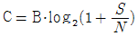
로 표시된다. (단, B는 통신로의 주파수 대역폭)- 백색잡음에 대해 성립하지 않고 잡음의 형태와 관계가 없다.
(정답률: 55%)
75. 다음 중 선로가 유 손실일 경우 무 왜곡조건이 성립되는 것은?
- PL = CG
- RG = LC
- LG = RC
- RG = 2LC
(정답률: 50%)
76. 다음 중 HDLC 제어부의 프레임 형식에 해당하지 않는 것은?
- I-프레임
- K-프레임
- S-프레임
- U-프레임
(정답률: 60%)
77. 다음 중 동축케이블과 비교하여 광섬유케이블의 특징으로서 적합하지 않는 것은?
- 가볍다.
- 부피가 작다.
- 광대역이다.
- 가공이 쉽다.
(정답률: 알수없음)
78. 데이터 전송시 블록으로 나누어 전송하는 이유가 아닌 것은?
- 전송이 길어지면 에러가 일어날 확률이 높으므로
- 한 회선을 오래 동안 점유함으로써 발생되는 지연을 최소화 시키기 위해
- 수신측 버퍼 크기의 제한 때문에
- 보내는 정보의 속도를 빠르게 하기 위해서
(정답률: 알수없음)
79. 일반적으로 통신선로의 전송손실을 다음과 같은 자연대수로 표시한다. 그 단위는? (단, P1 : 입력, P2 : 출력)
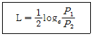
- dB
- dB/km
- Neper
- Percent
(정답률: 알수없음)
80. 0, 1로 나타내는 신호의 신호간격(주기)이 2[msec] 일 때 데이터 신호 속도[Kbit/sec]는?
- 0.5
- 1
- 2
- 4
(정답률: 알수없음)
5과목: 전자계산기일반 및 정보통신설비기준
81. 교착 상태(Deadlock)의 발생 필요조건이 아닌 것은?
- 점유와 대기(hold and wait)조건
- 상호 배제(mutual exclusion)조건
- 상태전이(status change)조건
- 순환적 대기(circular wait)조건
(정답률: 40%)
82. 다음 기계어의 설명 중 잘못 된 것은?
- 숙달된 사용자가 아니면 프로그램하기가 어렵다.
- 명령이나 수식을 연산하기 쉬운 기호를 사용하므로 기호언어라고도 한다.
- 기종마다 서로 다른 고유의 명령코드를 사용한다.
- 프로그램의 추가, 변경, 수정이 불편하다.
(정답률: 15%)
83. 16진수인 다음 식의 결과 값은 무엇인가?
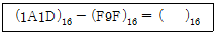
- A55
- A7E
- AFA
- FFA
(정답률: 알수없음)
84. 링크드 리스트(Linked lisk)의 특징이 아닌 것은?
- 자료들을 연속된 공간에 저장할 필요가 없다.
- 기억장치 내의 다른 자료들을 움직일 필요가 없다.
- 포인터를 위한 기억장소가 필요하다.
- 임의의 자료를 읽는데 걸리는 시간이 선형 리스트 보다 짧다.
(정답률: 알수없음)
85. 다음 중 “0”에 대응되는 비트만 클리어 시킬 수 있는 동작은?
- 시프트 명령
- 배타적 OR 명령
- AND 명령
- OR 명령
(정답률: 19%)
86. PC에 의해 다음에 실행할 프로그램 명령어가 들어 있는 주 기억 장치의 번지를 기억하고 있는 레지스터는?
- PC
- ZR
- PSW
- MAR
(정답률: 알수없음)
87. 다음은 기억장치에 대하여 설명하였다. 옳지 않은 것은?
- 캐시메모리 : 입ㆍ출력장치와 주기억장치 사이에 위치하여 실행속도를 높이기 위하여 사용하는 기억장치
- 레지스터 : CPU가 데이터를 처리하는 동안 중간 결과를 일시적으로 저장해 두기위해 사용되는 고속 기억회로
- 버퍼 : 일시적인 데이터 저장장소
- 가상기억장치 : 실제의 주기억장치 용량보다 더 큰 기억 용량이 있는 것처럼 사용되는 메모리
(정답률: 알수없음)
88. 버스 경합이나 기억 장치의 충돌과 같은 문제를 해결하기 위하여 기억장치를 복수 모듈로 구성하고 다수의 모듈이 동시에 접근이 가능하도록 하는 방식은?
- 기억장치 인터리빙 방식
- ROM 매핑 방식
- 기억장치 사상 입출력 방식
- 프로그램 내장 방식
(정답률: 알수없음)
89. 15 kbyte 주기억장치를 구성하여 byte 단위로 액세스 하려면 최소한 몇 개의 어드레스 선이 필요한가?
- 10
- 12
- 14
- 16
(정답률: 알수없음)
90. CPU에서 논리연산 또는 산술연산을 행하였을 때 그 결과의 상태(Status)를 나타내는 레지스터는?
- 인덱스 레지스터
- 상태 레지스터
- 명령 레지스터
- 스택 포인터
(정답률: 알수없음)
91. 정보통신공사 발주자로부터 공사를 도급 받은 공사업자를 무엇이라고 하는가?
- 수급인
- 도급인
- 용역업자
- 하도급인
(정답률: 알수없음)
92. 우리나라 전기통신의 관장은 누가 하는가?
- 대통령
- 국무총리
- 정보통신부장관
- 한국통신부장관
(정답률: 60%)
93. 서로 다른 정보통신설비 또는 이용자 설비와의 사이에 정보의 상호전달을 위하여 사용되는 통신규약은 누가 공개하여야 하는가?
- 정보통신부장관
- 관할 지방자치단체장
- 해당 전기통신사업자
- 해당설비 이용자
(정답률: 30%)
94. 기간통신사업자가 전기통신설비의 건설 또는 보전을 위하여 타인의 주거용 건물에 출입하고자 할 때에 가장 적합한 절차는?
- 신분을 증명하는 증표를 제시하고 출입한다.
- 거주자에게 미리 통보하고 출입한다.
- 거주자에게 승낙을 얻은 후 출입한다.
- 임의로 출입한다.
(정답률: 알수없음)
95. 기간통신사업을 경영하는 조건에 관한 설명으로 틀린 것은?
- 정보통신부장관의 허가를 받아야 한다.
- 정보통신정책심의위원회의 심의를 거쳐야 한다.
- 허가의 대상자는 개인이어야 한다.
- 기간통신역무 제공계획의 타당성이 있어야 한다.
(정답률: 알수없음)
96. 다음 중 정보통신공사업 등록을 신청할 수 없는 자가 아닌 것은?
- 금치산자 또는 한정치산자
- 파산선고를 받고 복권되지 아니한 자
- 정보통신공사업의 등록이 취소된 후 3년을 경과한 자
- 정보통신공사업법을 위반하여 벌금형의 선고를 받고 2년을 경과하지 아니한 자
(정답률: 70%)
97. 정보통신공사를 설계하는 자는 무엇에 적합하도록 설계하여야 하는가?
- 정보통신공사법이 정하는 설계지침
- 한국정보통신공사협회의 설계공법
- 기술용역법에서 제정한 공사설계약관
- 정보통신부령으로 정하는 기술기준
(정답률: 알수없음)
98. 단말장치의 전자파장해 방지기준 및 전자파장해로부터의 보호기준 등은 어느 법령이 정하는 바에 따르는가?
- 정보통신망이용촉진에 관한 법령
- 전파에 관한 법령
- 전기통신사업에 관한 법령
- 정보통신공사업에 관한 법령
(정답률: 37%)
99. 정보통신부장관이 전기통신기술의 진흥을 위하여 수립ㆍ시행하는 시행 계획에 포함되는 사항이 아닌 것은?
- 전기통신기술의 표준화
- 전기통신 기자재의 시험업무
- 새로운 전기통신방식의 채택
- 전기통신기술 연구기관 또는 단체의 육성
(정답률: 37%)
100. 정보통신공사업자 이외의 일반인이 시공할 수 있는 경미한 공사는?
- 고주파 이용 통신설비의 설비공사
- 교환설비 설치공사
- 전력유도방지의 설비공사
- 아마추어국 설치공사
(정답률: 알수없음)